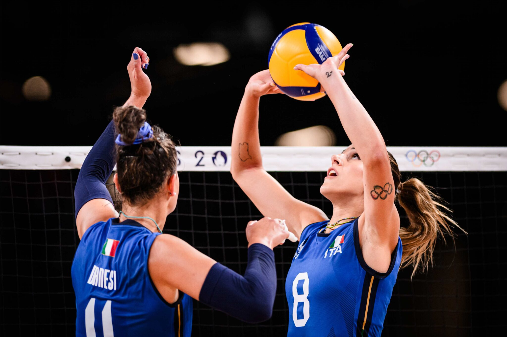
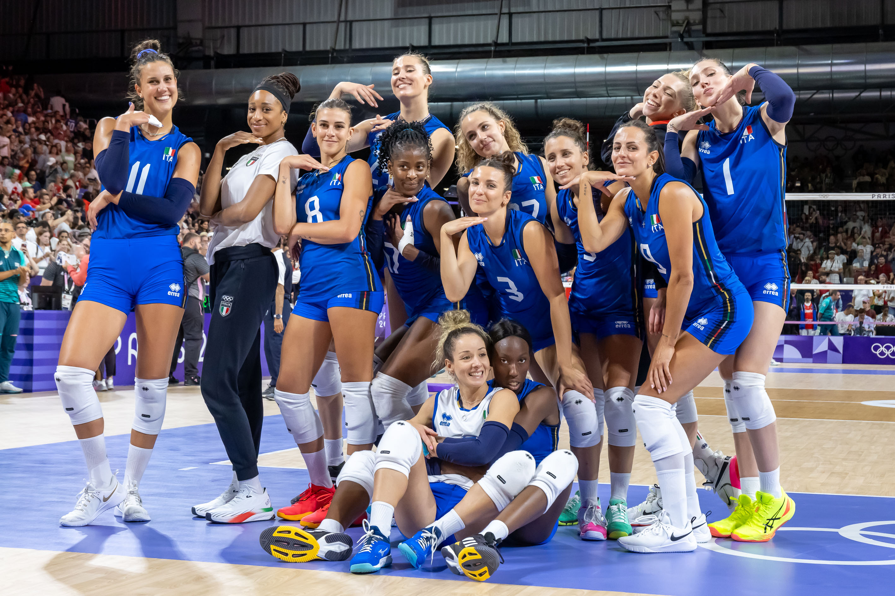

La semifinale contro la Turchia
Dopo la vittoria nei quarti contro la Serbia, l’Italia è arrivata in semifinale con grande fiducia. L’avversaria era la Turchia, una nazionale forte, fisica e già affrontata dalle Azzurre nella fase a gironi.
La partita era molto importante perché valeva l’accesso alla finale olimpica. In una gara del genere non bastava giocare bene: servivano concentrazione, ordine e capacità di gestire la pressione nei momenti decisivi.
L’Italia ha risposto nel modo migliore, vincendo 3-0 e dimostrando ancora una volta di essere una squadra completa. Con questa vittoria le Azzurre hanno conquistato la finale contro gli Stati Uniti.
Risultato
| Partita | Risultato |
|---|---|
| Italia - Turchia | 3-0 |
Parziali: 25-22, 25-19, 25-22.
Un primo set molto combattuto
Il primo set è stato subito intenso. La Turchia ha provato a restare attaccata al punteggio, ma l’Italia è riuscita a mantenere lucidità anche quando lo scambio diventava lungo e difficile.
Le Azzurre hanno lavorato bene in ricezione e hanno costruito azioni ordinate. Nei punti più importanti la squadra non si è fatta prendere dalla fretta e ha scelto meglio le soluzioni d’attacco.
Il 25-22 del primo set ha dato una spinta importante all’Italia. Vincere il primo parziale in una semifinale olimpica significa mettere pressione all’avversaria e aumentare fiducia nel proprio gioco.


Il dominio nel secondo set
Nel secondo set l’Italia ha alzato ancora il livello. Il punteggio di 25-19 mostra una squadra più sicura, capace di prendere il controllo della partita e di togliere ritmo alla Turchia.
Una delle chiavi è stata la fase muro-difesa. Le Azzurre sono riuscite a limitare molti attacchi avversari e a trasformare le difese in nuove occasioni per fare punto.
Anche la distribuzione del gioco è stata importante: Alessia Orro ha gestito bene le compagne, rendendo l’attacco italiano meno prevedibile e più difficile da fermare.
Il set che porta alla finale
Nel terzo set la Turchia ha provato a reagire per riaprire la partita. L’Italia però è rimasta compatta e ha continuato a giocare con ordine, senza perdere sicurezza.
Anche nei momenti più delicati le Azzurre sono riuscite a restare concentrate. Il set si è chiuso 25-22, completando il 3-0 e confermando la forza della squadra.
Questa semifinale ha avuto un valore enorme: non è stata solo una vittoria, ma il passaggio decisivo verso la partita per l’oro. Dopo quel successo, l’Italia era pronta ad affrontare gli Stati Uniti in finale.
